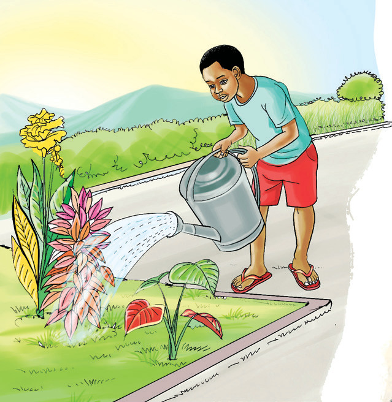

Activity 4.3:
Expressing past events using past continuous tense
(a) Study the following sentences.
- 1. Juma was sleeping that time.
- 2. It was raining when he arrived.
- 3. She was going to school when we met.
(b) Study the pictures and say/sign, “What were these people doing at the times shown in the past?”
7:00 a.m.

12:30 p.m.